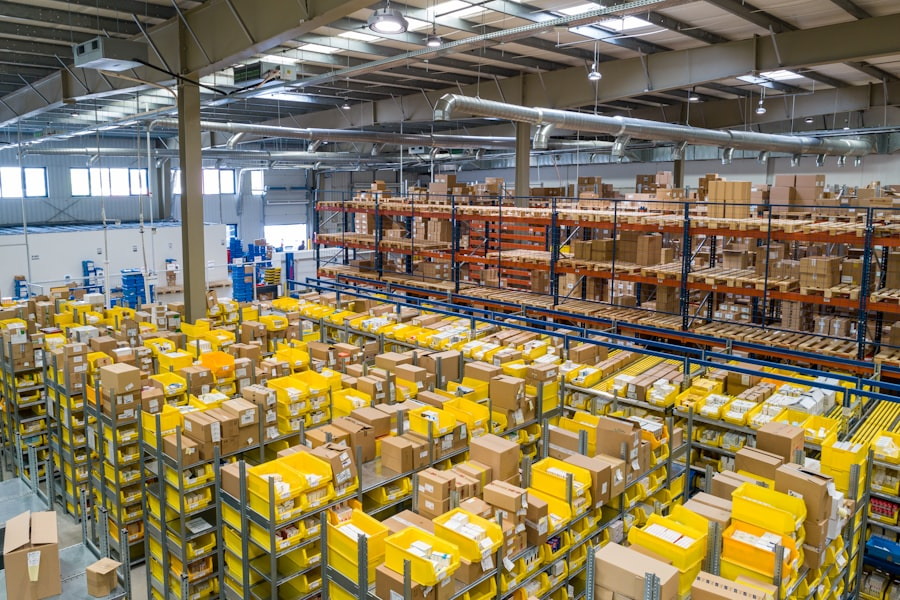

Warehouse processes varied across clients, while employees needed clear instructions and reliable navigation on small handheld devices.
Turning complex warehouse operations into clear mobile workflows
I redesigned key workflows in EME.APP, covering receiving, picking, packing, and stock movement. My focus was on simplifying task sequences, improving barcode-driven interactions, and adapting interfaces to the constraints of warehouse devices.


One clear system for different warehouse tasks
EME.APP supports over 15 warehouse processes, each with its own steps and requirements. I worked on making these workflows easier to navigate while keeping the interface adaptable to different operations.
My role
I was responsible for the mobile UX/UI, designing task flows, scanning interactions, and reusable interface components. I adapted layouts to warehouse devices and worked with analysts and the product team to clarify requirements and refine design decisions.
The many moving parts of warehouse work
Tap a work area to explore its section.
Making picking tasks easier to manage
I organized the picking screen so warehouse staff can review selected orders, track progress, and resume unfinished work without navigating through multiple screens.
Workload at a Glance
I brought order counts, line items, volume, weight, and progress into one overview, giving workers the information they need before starting a task.
Design decision
I separated order selection from task execution. Warehouse staff can review and select orders before starting work, while unfinished tasks remain accessible from the same screen. This keeps preparation and execution distinct without adding unnecessary navigation.
From packing to shipment readiness
I designed the packing and dispatch interfaces around the steps warehouse staff perform: scanning items, checking contents, preparing labels, and moving goods to the next operation.
Clear Packing Progress
I kept item quantities, container details, and the current operation visible, so workers could see what had been processed and what still needed attention.
01Scan
Scan items into the packing task.
02Check
Verify contents and quantities.
03Prepare
Prepare labels and hand off goods.
Making every scan easy to verify
I designed barcode-driven interactions that keep item details, quantities, and storage locations visible, helping warehouse staff check information before moving to the next step.
Clear Scan States
I used color-coded statuses and short instructions to distinguish normal progress from situations that require attention or correction.
Fewer steps, without losing control
Warehouse operations needed to be fast, but removing too many checks could allow incorrect items or quantities to move further through the process.
Reduce unnecessary steps
Repeated actions slow down routine warehouse tasks, especially when employees process many items.
Not every check is optional
An incorrect item or quantity can affect packing, dispatch, and subsequent operations.
Confirm what matters
I simplified routine interactions while keeping explicit confirmation for critical item and quantity checks.
Making complex warehouse operations easier to manage
I redesigned key warehouse operations for handheld devices, covering task management, barcode scanning, picking, packing, and stock movement. The result was a reusable mobile interface system adapted to different warehouse processes and device constraints.
- Mobile screens designed
- 70+
- Warehouse workflows covered
- 15+
- Fewer steps in key workflows
- ~30%